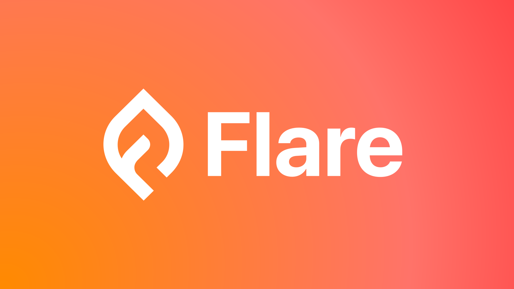
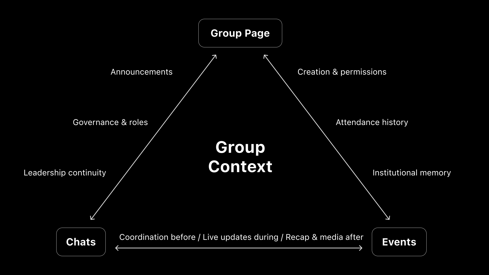
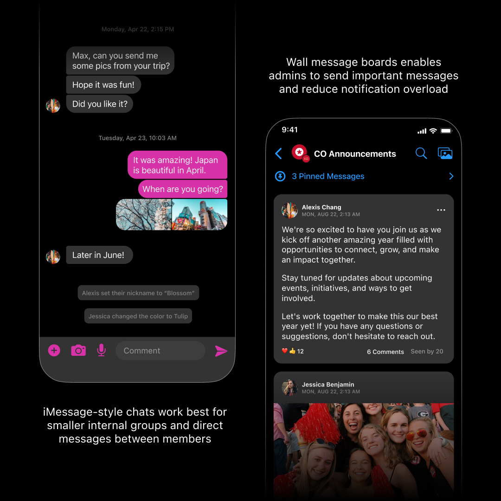
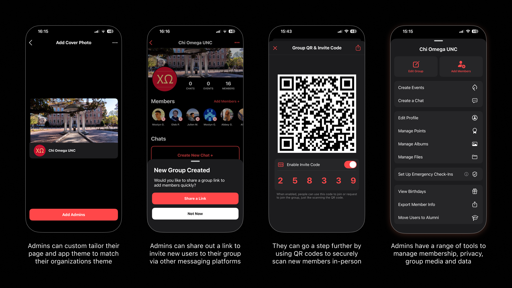

Flare: Designing social infrastructure for campus groups
PRODUCT
Branding
Background
Flare is the one-stop-shop for group communication, events, and management. It's a product that I've collaborated on with founders Jack Chen and Daniel Breyer since 2017.
Project Overview
CEO and founder, Jack Chen, needed a designer that could take his group communication concept from 0→1. I provided the product and brand design experience needed to bootstrap Flare and grow its user base.

Flare Origins
In 2017 at Brown University, founder Jack Chen was building an events app called FlairTime. What he observed inside Greek life applied broadly across campus organizations.
“I saw a huge need within student organizations to make communication easier. People were using so many different apps just to stay organized.” – Jack Chen
Flare emerged from that observation with a clear goal: replace a messy amalgam of apps with a purpose-built system for groups.
The Challenge
Campus groups are not just chats or calendars. They are living systems that plan events, move money, onboard members, make decisions, and preserve continuity as leadership turns over every year.
Before Flare, student organizations stitched together an ecosystem of tools:
Before Flare, student organizations stitched together an ecosystem of tools:
- Group chats for coordination
- Social platforms for announcements
- Ticketing apps for events
- Payment apps for dues
- Cloud drives for files
For campus groups, this meant disorganization and cognitive overload. Important information scattered, engagement dropped, and organizers spent more time managing tools than building community.
The real problem wasn’t missing features. It was fragmentation.
The real problem wasn’t missing features. It was fragmentation.

My Role
I partnered closely with CEO and founder Jack Chen to take Flare from concept to a scaled product used across hundreds of campuses.
My responsibilities included:
My responsibilities included:
- Product strategy and feature framing
- Information architecture and systems design
- Interaction and UX design across core surfaces
- Branding and visual foundations
This was sustained 0→1 work, iterating over multiple years as the product and user base matured.
Product Strategy
Flare is organized around three tightly integrated pillars:
- Group Pages — long-term organizational structure
- Group Chats — flexible communication modes
- Events — time-bound shared experiences
Flare is a single system with multiple entry points, designed around how groups actually operate over time. Each pillar solves specific friction points while reinforcing the others.

Pillar 1: Events
Friction Points
Events are the heartbeat of student groups, but planning them usually means juggling tools for invites, payments, updates, check-in, and photos; often in real time.
Design Principle
Treat events as active, temporal spaces, not just static listings.
Key Design Decisions
- Events function as self-contained hubs with details, attendees, updates, and media
- Built-in ticketing and QR scanning eliminate external tools at the door
- Native Venmo payments reduce drop-off for dues and entry fees
- Polls and announcements keep decisions and updates in one place
- Disposable camera feature: Guests can take photos during the event but only view them after it ends which encourages being present
Behavioral Impact
Events didn’t end when the doors closed. Photos, chats, and recaps flowed naturally back into the group, reinforcing memory and continuity.

Pillar 2: Group Chats
Friction Points
Linear group chats collapse under scale. Urgent messages get buried and meaningful discussions feel out of place in rapid-fire streams.
Design Principle
Match communication mode to intent.

Key Design Decisions
- Text-style chats for quick coordination and social interaction
- Message boards with threaded comments for announcements and long-form discussion
- Contextual links between chats, events, and group pages to anchor conversations

Behavioral Impact
Noise decreased while participation increased. Important posts stayed visible without sacrificing spontaneity.
“My chapter uses an announcements group chat where executive officers can share important updates... I've found this to be a huge help for my chapter! We're able to prevent unwanted messages and questions from being sent in the chat.”
– Lily Byrd, President of Kappa Alpha Theta at Texas A&M
Pillar 3: Group Pages
Friction Points
Student leaders need structure and continuity, but most members just want things to work.
Design Principle
Power for admins, simplicity for members.

Key Design Decisions
- Admin tools for managing membership, roles, and permissions
- Centralized access to events, chats, albums, and files
- Points and recognition systems to reward participation
- Group-to-group connections for co-hosted events and shared chats
Behavioral Impact
Groups scaled more easily, leadership transitions became smoother, and institutional knowledge stopped disappearing each year.
Outcomes & Impact
Following iterative UX, brand, and marketing improvements:
- Flare secured $3MM in seed funding from Floodgate, Bessemer, and Goodwater
- Daily active users scaled from 20K to 150K between 2022 and 2023
- Flare now serves 500K+ monthly users across 5,000+ student groups at 500+ colleges nationwide
Flare remains a case study in designing long-term social infrastructure: systems that survive leadership turnover, scale gracefully, and quietly fade into the background allow community to take center stage.